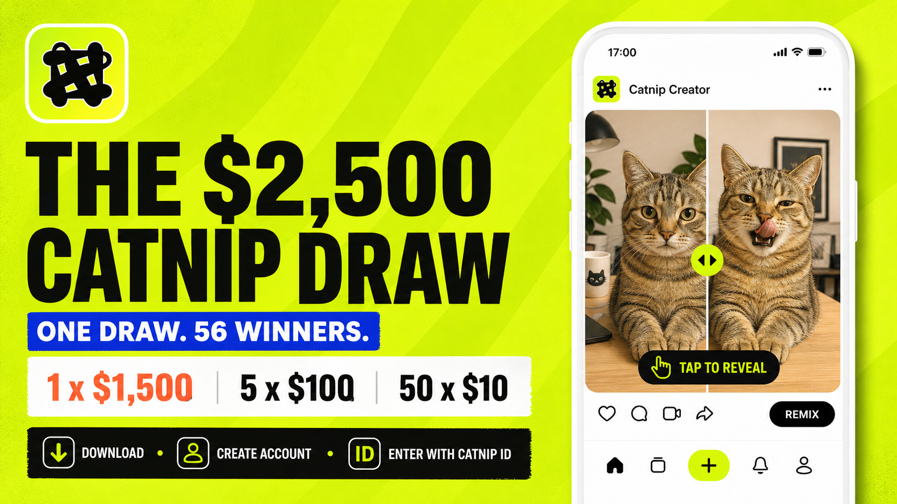
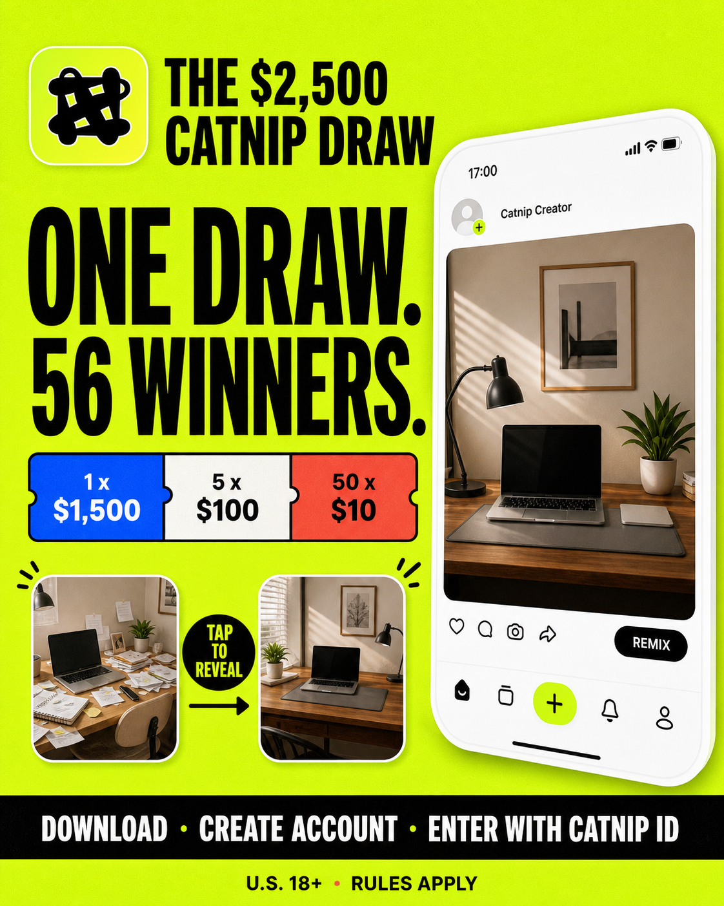
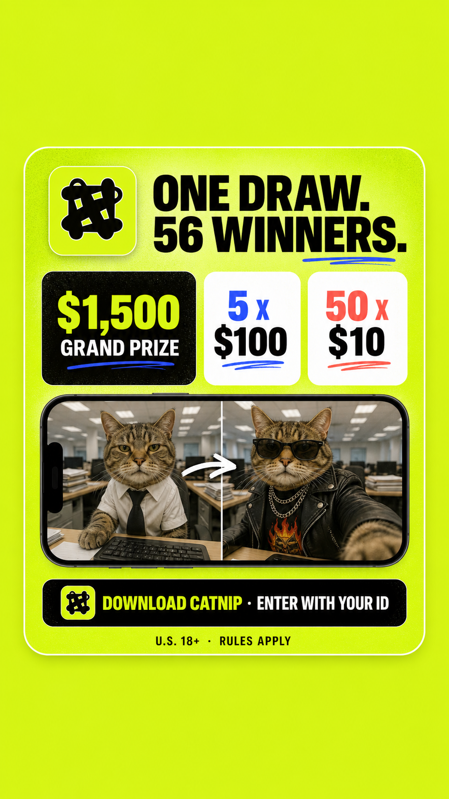
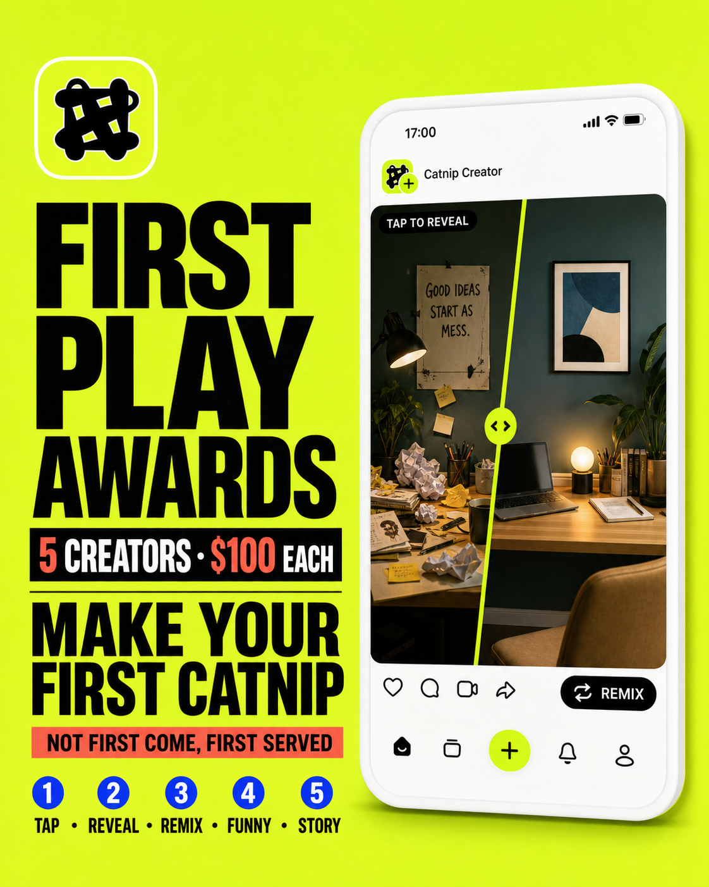
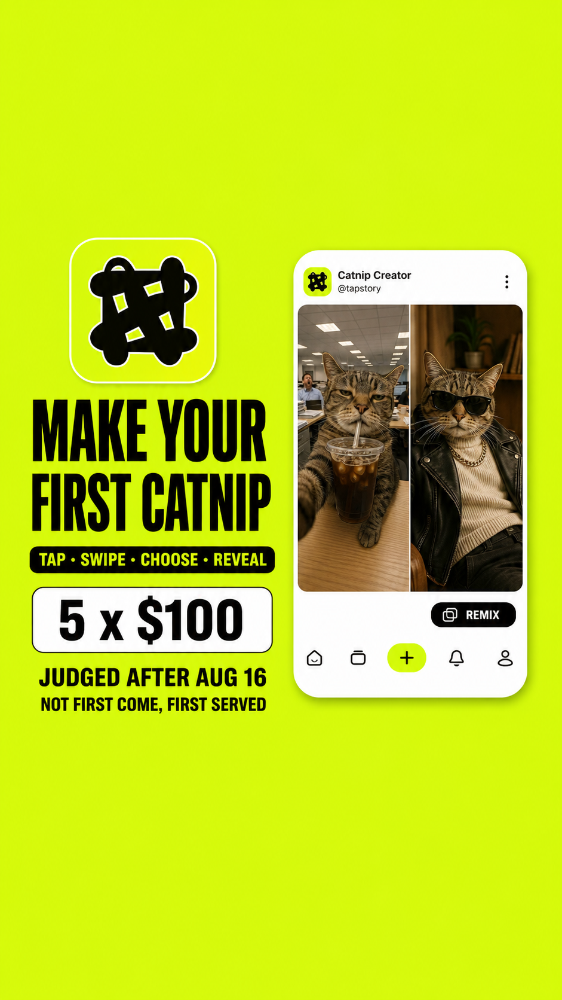
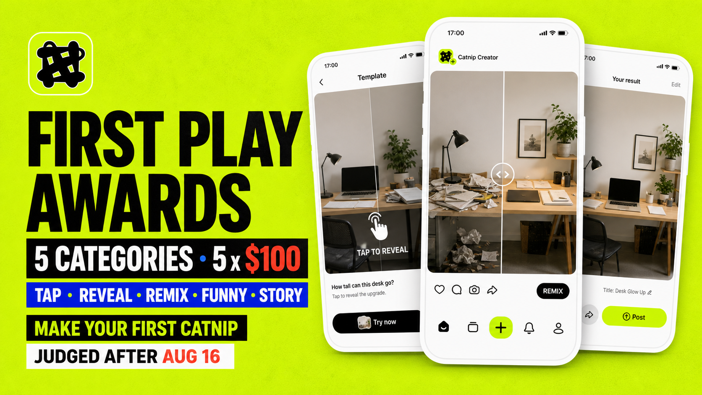
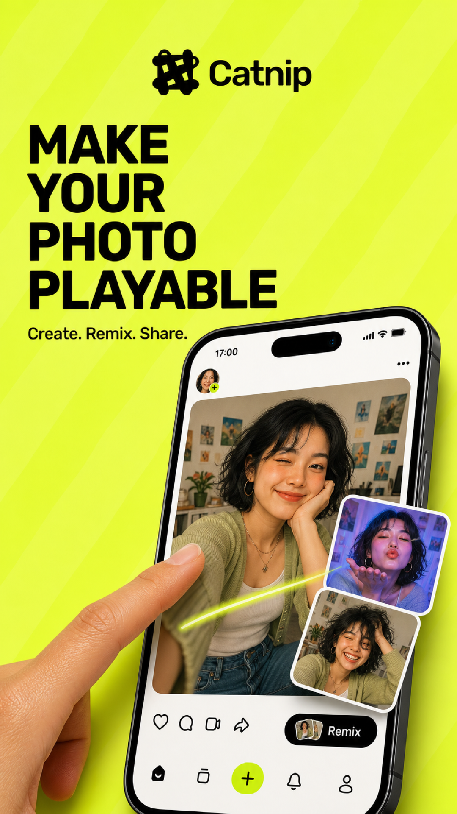

The $2,500 Catnip Draw
下载、注册、提交 Catnip Account ID，进入一次统一开奖。
1 × $1,500头奖现金
5 × $100二等奖现金
50 × $10小奖现金
A 用一次统一抽奖拉安装和注册，B 用五个作品奖推动第一次创作；Weekly Challenge 接住后续活跃和内容产出。

下载、注册、提交 Catnip Account ID，进入一次统一开奖。
新用户发布第一条有效互动作品，截止后统一评审。五个类别各 1 名、各 US$100；不按报名先后。
5 × US$100Tap Twist · Reveal · Remix · Funniest Play · Tiny Story每周至少发布并分享 3 个作品，每条分别填表。达标创作者少于 50 人时评 1 人；达到 50 人时评 3 人。
US$30 / 人每周最高 US$90，月上限约 US$360活动内容先自然发布，再选 1-2 条表现较好的帖子做 US$200-400 小额加热。产品 App Ads 不在本活动范围内。
查看安排奖金结构
参与方式
传播主句 ONE DRAW. 56 WINNERS. 下载 Catnip，提交 Account ID，抽 US$1,500、US$100 和 US$10 现金。
开奖与发奖
奖金 5 个类别各选 1 人，每人 US$100 现金，总奖金 US$500。
参赛资格
评审方式
传播要点
奖金规则
A+B 一次性奖金
| 活动 | 奖金 |
|---|---|
| A：The $2,500 Catnip Draw | US$2,500 |
| B：First Play Awards | US$500 |
| 合计 | US$3,000 |
Weekly Challenge 单独常态记账，月上限约 US$360，不占用 A+B 奖金。
内容加热
TikTok / Instagram / Threads / X
Discord
第一阶段：上线（7/15-7/23）
第二阶段：解释（7/24-7/31）
第三阶段：转首作（8/1-8/10）
第四阶段：最后提醒（8/11-8/16）
加热数据
活动数据
计算方式
绿色标签可直接复制；橙色标签需要先补活动链接、主页链接或具体时间。右上角“复制”只复制卡片正文。
内部用途
用统一抽奖拉下载和注册，再用单独评选推动第一条可玩作品。
对外主句
ONE DRAW. 56 WINNERS.
Download Catnip. Create your free account. Enter with your Catnip ID.
产品表达
Turn a photo into something people can tap, swipe, choose, reveal, and remix.
必备短声明
U.S. residents, 18+. iOS only. Ends Aug 16, 2026 at 11:59 p.m. PT. No purchase necessary. Void where prohibited. Odds depend on the number of eligible entries. Rules: [OFFICIAL RULES URL]. Apple is not a sponsor or involved in this promotion.
顶部短句
THE $2,500 CATNIP DRAW
主标题
ONE DRAW. 56 WINNERS.
副标题
One person wins US$1,500. Five people win US$100. Fifty more people win US$10 cash.
正文
Download Catnip on iPhone, create your free account, and enter with your Catnip ID. While you are there, turn a photo from your camera roll into something people can actually play.
主按钮
DOWNLOAD CATNIP
次按钮
ENTER WITH MY CATNIP ID
补充说明
One entry per eligible person. One drawing after entries close. Fifty-six different winners. No extra entries for following, sharing, rating, or reviewing.
US$1,500 GRAND PRIZE
One winner.
US$100 SECOND PRIZES
Five winners.
US$10 CASH PRIZES
Fifty winners receive US$10 cash each.
Total prize value: US$2,500. Total winners: 56.
No person may receive more than one prize. If the same person is selected again during the drawing sequence, that selection is void and a new potential winner will be drawn.
One valid entry per eligible person, Catnip account, device, email address, and payment identity. Existing accounts, duplicate identities, invalid Account IDs, automated entries, and entries submitted outside the campaign period do not qualify.
报名时不要收付款资料。仅在潜在获奖者完成资格核验后，通过单独的安全表单收取。
YOU’RE IN THE DRAW.
Your entry has been received and is pending eligibility checks. Potential winners will be selected in one drawing and announced on Aug 21, 2026.
Want another way to win? Make your first playable Catnip and enter the First Play Awards. Five creators will each win US$100. Entries are judged after the deadline, so joining later does not reduce your chance.
按钮文案： MAKE MY FIRST CATNIP
次按钮： SEE THE FIVE AWARDS
画面文字
TOMORROW: ONE DRAW. 56 WINNERS.
配文
Tomorrow, an ordinary camera-roll photo becomes playable and one Catnip drawing opens for 56 different winners.
One person will win $1,500. Five will win $100. Fifty more will receive $10 cash. Full entry steps, dates, eligibility, and rules go live tomorrow.
U.S. residents, 18+. Apple is not a sponsor.
画面文字
NOT ONE WINNER. 56.
1 × $1,500
5 × $100
50 × $10
配文
One download. One Catnip ID. One drawing with 56 different winners.
Download Catnip on iPhone, create your free account, and enter the US$2,500 Catnip Draw. One person wins $1,500. Five people win $100. Fifty more win $10 cash.
U.S. residents, 18+. Ends Aug 16 at 11:59 p.m. PT. No purchase necessary. Odds depend on eligible entries. Full rules in bio. Apple is not a sponsor.
#CatnipDraw #CatnipApp #InteractivePhotos
画面文字
YOUR CAMERA ROLL CAN DO MORE.
MAKE IT PLAYABLE.
ENTER THE $2,500 DRAW.
配文
Take one ordinary photo. Add a tap, swipe, choice, reveal, or remix. That is Catnip.
Download the free iPhone app, create a new account, and enter the US$2,500 Catnip Draw with your Catnip ID. Fifty-six different people will win in one drawing.
U.S. residents, 18+. Ends Aug 16. No purchase necessary. Rules in bio. Apple is not a sponsor.
#MadeOnCatnip #PlayablePhotos #CatnipDraw
画面文字
ONE BIG PRIZE.
FIVE $100 PRIZES.
FIFTY MORE WINNERS.
配文
We did not want a draw that only feels real for one person.
The Catnip Draw selects 56 different winners: one $1,500 grand-prize winner, five $100 winners, and fifty $10 cash-prize winners. One account gets one valid entry. All winners are selected after entries close.
Download Catnip, create your free account, and enter with your Catnip ID. U.S. residents, 18+. Ends Aug 16. Rules in bio.
画面文字
ONE ENTRY.
ONE DRAWING.
56 DIFFERENT WINNERS.
配文
No daily drawings. No hidden extra entries. No requirement to follow, share, rate, or review.
Every eligible entry goes into one drawing after the deadline. A person can win only once. Potential winners are checked before the final list is posted on Aug 21.
Download Catnip on iPhone, create your account, and enter with your Catnip ID. U.S. residents, 18+. Full rules in bio.
画面文字
72 HOURS LEFT
56 WINNERS
$2,500 TOTAL
配文
The Catnip Draw closes in 72 hours.
One person wins $1,500. Five win $100. Fifty more win $10 cash. Download Catnip on iPhone, create your free account, and submit your Catnip ID before Aug 16 at 11:59 p.m. PT.
U.S. residents, 18+. No purchase necessary. Odds depend on eligible entries. Rules in bio. Apple is not a sponsor.
画面文字
24 HOURS LEFT
ONE DRAW · 56 WINNERS
配文
The $2,500 Catnip Draw closes tomorrow at 11:59 p.m. PT.
Download Catnip on iPhone, create your free account, and submit your Catnip ID. One person wins $1,500. Five win $100. Fifty more win $10 cash.
U.S. residents, 18+. No purchase necessary. Odds depend on eligible entries. Rules in bio. Apple is not a sponsor.
画面文字
FINAL 6 HOURS
配文
Last call for the US$2,500 Catnip Draw. Entry closes tonight at 11:59 p.m. PT.
Download. Create your free account. Submit your Catnip ID. Fifty-six different winners will be selected in one drawing.
U.S. residents, 18+. Rules and entry link in bio.
0–2 秒
画面： “56 WINNERS” 卡片快速铺满画面。
旁白： “Not one winner. Fifty-six.”
2–6 秒
画面： 奖项层级依次出现。
旁白： “One person gets fifteen hundred dollars. Five get one hundred. Fifty more get ten.”
6–11 秒
画面： 展示真实 Catnip 界面，照片随点击或滑动发生变化。
旁白： “Download Catnip, make a free account, and enter with your Catnip ID.”
11–15 秒
画面： 展示截止时间和按钮。
旁白： “One drawing. August sixteenth deadline. Rules in bio.”
画面底部小字： “U.S. 18+. No purchase necessary. Apple is not a sponsor.”
0–3 秒
画面： 展示一张普通相册照片。
旁白： “This photo is just sitting here.”
3–8 秒
画面： 同一张照片变成可点击揭晓或滑动变化的 Catnip。
旁白： “Catnip turns it into something people can play.”
8–12 秒
画面： 展示“ONE DRAW. 56 WINNERS.”
旁白： “And new users can enter a twenty-five-hundred-dollar draw.”
12–15 秒
画面： 展示 App Store 下载按钮。
旁白： “Download, create your account, enter with your Catnip ID.”
I turned a photo from my camera roll into something you can actually tap and change in Catnip. The app is also running one drawing with 56 different winners: $1,500 for one person, $100 for five people, and $10 cash for fifty more.
Download Catnip on iPhone, create a new account, and enter with your Catnip ID. U.S. 18+. Ends Aug 16. No purchase necessary. Rules: [OFFICIAL RULES URL]. Apple is not a sponsor.
Paid partnership with Catnip.
画面 1
NOT ONE WINNER. 56.
画面 2
1 PERSON WINS $1,500
画面 3
5 PEOPLE WIN $100
画面 4
50 MORE WIN $10
画面 5
DOWNLOAD CATNIP
CREATE AN ACCOUNT
ENTER WITH YOUR CATNIP ID
U.S. 18+ · ENDS AUG 16 · RULES
版本 1
We are opening one Catnip drawing with 56 different winners. One person gets $1,500, five get $100, and fifty more get $10 cash. Download the iPhone app, create a free account, and enter with your Catnip ID. U.S. 18+. Ends Aug 16. Rules: [OFFICIAL RULES URL]
版本 2
An ordinary photo does not have to stay ordinary. Add a tap, swipe, choice, reveal, or remix in Catnip. New U.S. iPhone users can also enter the $2,500 Catnip Draw. One drawing. 56 winners. Details: [CAMPAIGN URL]
版本 3
The Catnip Draw has no daily bonus entries and no requirement to follow, share, rate, or review. One valid account gets one entry. Fifty-six different winners are selected after entries close. U.S. 18+. Rules: [OFFICIAL RULES URL]
版本 4
Three days left. One $1,500 winner. Five $100 winners. Fifty $10 cash-prize winners. Download Catnip and submit your new Catnip ID by Aug 16 at 11:59 p.m. PT: [CAMPAIGN URL]
版本 1
ONE DRAW. 56 WINNERS.
1 × $1,500
5 × $100
50 × $10
Download Catnip on iPhone, create a new account, and enter with your Catnip ID. U.S. 18+. Ends Aug 16. Rules: [OFFICIAL RULES URL]
版本 2
Turn a camera-roll photo into something people can tap, swipe, choose, reveal, and remix. New Catnip users can enter the $2,500 Draw. One entry per person. 56 different winners. [CAMPAIGN URL]
版本 3
72 hours left in the Catnip Draw. One $1,500 winner, five $100 winners, and fifty $10 cash-prize winners. U.S. 18+. Enter by Aug 16 at 11:59 p.m. PT. [CAMPAIGN URL]
THE $2,500 CATNIP DRAW IS OPEN
One drawing. Fifty-six different winners.
参与步骤
Entries close Aug 16 at 11:59 p.m. PT. Potential winners are announced Aug 21 after eligibility checks. U.S. residents, 18+. No purchase necessary. Odds depend on eligible entries. Full rules: [OFFICIAL RULES URL]. Apple and Discord are not sponsors.
Discord is optional. Joining this server does not create an extra entry.
标题
We made an iPhone app that turns ordinary photos into tap, swipe, and reveal interactions
正文
Catnip is a small creative app for turning a camera-roll photo into something another person can play instead of only view. You can start from a template, add a tap, swipe, choice, reveal, or branch, and publish the result for other people to remix.
We are looking for direct feedback on two things: whether the first creation flow makes sense without a tutorial, and whether the interaction is obvious on the first screen.
We are also running a U.S. 18+ promotion for new iPhone users. If promotions are allowed in this thread, the full details and rules are here: [CAMPAIGN URL]. The promotion is not sponsored by, endorsed by, or associated with Reddit. We will remove this section if it does not fit the community rules.
App Store: https://apps.apple.com/us/app/catnip-turn-life-into-creation/id6754902286
图钉 1 标题
Turn a photo into a playable story
图钉 1 说明
Add a tap, swipe, choice, or reveal to an ordinary camera-roll photo with Catnip. Build a tiny interactive story on iPhone. https://apps.apple.com/us/app/catnip-turn-life-into-creation/id6754902286
图钉 2 标题
Interactive photo idea: tap to reveal
图钉 2 说明
Use a before-and-after photo, outfit, room, desk, pet, or original character. Hide the second state behind a tap and share the playable result in Catnip.
图钉 3 标题
Photo remix idea for creators
图钉 3 说明
Start with one photo, change the interaction, and let someone else remix the result. Made with Catnip on iPhone.
顶部短句
FIRST PLAY AWARDS
主标题
MAKE YOUR FIRST CATNIP. WIN ONE OF FIVE $100 AWARDS.
正文
Publish your first playable Catnip during the campaign and submit it before Aug 16. Five categories. Five winners. Every qualifying entry is judged after the deadline, so joining later does not put you behind.
按钮文案
SUBMIT MY FIRST PLAY
BEST TAP TWIST
A tap changes the meaning, outcome, or joke.
BEST REVEAL
The reveal lands clearly and feels worth the interaction.
BEST REMIX
The creator changes the source idea into a distinct new play.
FUNNIEST PLAY
The interaction delivers the strongest comic beat.
BEST TINY STORY
A complete, playable story fits into a small number of screens.
One US$100 winner per category. A single entry may be considered for more than one category but may receive only one award. If an entry ranks first in multiple categories, the judging team assigns it to the category where it has the strongest score and advances the next-highest eligible entry in the other category.
Entries are judged after submissions close. Submission time, likes, views, follower count, and paid promotion do not affect the score.
Ties are broken by the higher Playability and Clarity score, then the higher Original Idea score. If a tie remains, the judging team uses a documented final vote.
主标题
YOU’RE IN THE DRAW. NOW MAKE YOUR FIRST PLAY.
正文
Your $2,500 Draw entry is submitted. Open Catnip, turn one photo into a working interaction, and enter the First Play Awards. Five creators win $100 each. Every entry is judged after the same deadline.
按钮文案
MAKE MY FIRST CATNIP
画面文字
NO IDEA? START WITH ONE TAP.
配文
Pick one photo. Hide a second state behind a tap. Add a title that tells people what to do. That is enough to enter your first real playable idea.
Publish your first Catnip and submit it to the First Play Awards. Five categories. Five $100 winners. Judged after Aug 16, not first come, first served.
U.S. residents, 18+. New campaign-period accounts only. Contest rules in bio.
画面文字
FIVE WAYS TO WIN $100
TAP TWIST
REVEAL
REMIX
FUNNIEST PLAY
TINY STORY
配文
Your first Catnip does not have to fit one style. Make the interaction clear, give it a real idea, and submit it before Aug 16.
Five category winners receive $100 each. Likes, views, follower count, and entry time do not decide the result. Full judging criteria and rules in bio.
画面文字
PHOTO → TAP → REVEAL
配文
This started as one photo. The creator added a tap, hid the second state, and made the first screen tell you exactly what to do.
Make your first playable Catnip and enter the First Play Awards. Five creators win $100. New U.S. iPhone users, 18+. Entries close Aug 16. Rules in bio.
执行说明：只能展示真实且已获授权的 Catnip，不要把概念图说成用户投稿。
画面文字
72 HOURS TO MAKE YOUR FIRST PLAY
配文
There is still time. First Play Awards entries are judged after the deadline, not by who arrived first.
Make one Catnip with a working tap, swipe, choice, reveal, or branch. Publish it and submit the link by Aug 16 at 11:59 p.m. PT. Five category winners receive $100 each.
U.S. residents, 18+. New campaign-period accounts only. Rules in bio.
0–3 秒
画面： 创作者看着一张普通照片。
旁白： “Your first Catnip can start with one photo.”
3–8 秒
画面： 加入点击互动，揭晓第二个状态。
旁白： “Add one clear interaction. Tap, swipe, choose, reveal, or branch.”
8–12 秒
画面： 五个奖项类别依次出现。
旁白： “Five categories. Five creators win one hundred dollars.”
12–15 秒
画面： 展示截止时间和提交按钮。
旁白： “Publish and enter by August sixteenth. Not first come, first served.”
画面 1
YOU’RE IN THE $2,500 DRAW.
画面 2
NOW MAKE YOUR FIRST CATNIP.
画面 3
5 CATEGORIES
5 × $100
画面 4
JUDGED AFTER AUG 16
NOT FIRST COME, FIRST SERVED
SUBMIT YOUR PLAY
版本 1
Already entered the Catnip Draw? Your next move is a first playable post. The First Play Awards select five $100 winners across Tap Twist, Reveal, Remix, Funniest Play, and Tiny Story. Entries are judged after Aug 16. [FIRST PLAY URL]
版本 2
No blank-page marathon: choose one photo, add one tap or swipe, make the first screen tell people what to do, then publish. That is enough to give your idea a real chance in the First Play Awards. U.S. 18+. Rules: [CONTEST RULES URL]
版本 3
Likes do not decide the First Play Awards. Neither do follower count, paid reach, or submission time. We score playability, originality, first-screen clarity, and completion. Five categories, five $100 winners. [FIRST PLAY URL]
版本 4
72 hours left to publish your first Catnip. Every qualifying entry is judged after the same deadline, so a late start is still a real start. Five creators win $100. [FIRST PLAY URL]
FIRST PLAY AWARDS: FIVE CREATORS WIN $100
Entered the Catnip Draw? Make your first playable Catnip next.
Choose one or more ways to play:
Submit your first published Catnip by Aug 16 at 11:59 p.m. PT. Five category winners receive US$100 each. Entries are judged after the deadline; joining later does not reduce your score.
Likes, views, follower count, paid promotion, and submission time do not affect judging.
Categories, rubric, entry form, and rules: [FIRST PLAY URL]
YOUR FIRST PLAY IS SUBMITTED.
Keep the Catnip published and available through the verification period. Entries are judged after Aug 16 using the published rubric. Potential winners will be contacted before the final announcement on Aug 21.
You do not need to collect likes or ask people to vote. Make sure your interaction works and your first screen tells people what to do.
画面文字
CREATE 3. SHARE 3. SUBMIT 3.
配文
This week, make at least three Catnips and share each one to TikTok, Instagram, X, or Threads. Tag the official Catnip account, add [OFFICIAL HASHTAG], and submit every work through the Weekly Challenge form.
If fewer than 50 creators qualify, one winner receives US$30 cash. If 50 or more creators qualify, three winners receive US$30 cash each. Discord is optional.
[WEEKLY FORM URL]
画面文字
HOW MANY HAVE YOU MADE THIS WEEK?
1 / 3 · 2 / 3 · 3 / 3
配文
Three published Catnips make a complete Weekly Challenge entry. Share and submit each work separately before [WEEKLY DEADLINE]. Creativity, playability, interaction, and real original materials matter more than follower count.
[WEEKLY FORM URL]
主标题
WEEKLY CHALLENGE IS OPEN
正文
Make at least three Catnips this week. Share every work to TikTok, Instagram, X, or Threads with [OFFICIAL HASHTAG] and tag the official Catnip account. Submit each work separately here: [WEEKLY FORM URL]
Joining Discord is optional. Use this channel for feedback, ideas, and winner updates.
画面文字
THIS WEEK'S CATNIP PICKS
配文
Meet this week's Weekly Challenge winner[s]: [CATNIP ID / IDS]. These works stood out for creativity, interaction, and completion.
See the featured Catnips: [WINNING WORK URLS]
Next week's challenge is open: [WEEKLY FORM URL]
邮件主题： You are entered in the $2,500 Catnip Draw
预览文本： One drawing. 56 different winners. Next: make your first playable Catnip.
Your entry has been received and is pending eligibility checks.
Potential winners will be selected after entries close on Aug 16 at 11:59 p.m. PT. One person wins $1,500, five people win $100, and fifty more people win $10 cash.
Ready to make something? Publish your first playable Catnip and enter the First Play Awards for a chance at one of five $100 category awards.
[MAKE MY FIRST CATNIP]
U.S. 18+. Rules: [OFFICIAL RULES URL]. Apple is not a sponsor.
邮件主题： Your first Catnip can start with one tap
Pick one photo. Add one working interaction. Make the first screen tell people what to do.
That is enough to move from a blank screen to a real entry in the First Play Awards. Five category winners receive $100 each, and every qualifying entry is judged after the same deadline.
[OPEN A STARTER TEMPLATE]
邮件主题： Which First Play Award fits your idea?
Tap Twist. Reveal. Remix. Funniest Play. Tiny Story.
Choose the category that matches your strongest idea, publish your first Catnip, and submit the link before Aug 16. Likes and follower count do not affect the score.
[SEE THE FIVE CATEGORIES]
邮件主题： 72 hours left: 56 winners in one Catnip drawing
The $2,500 Catnip Draw closes Aug 16 at 11:59 p.m. PT.
If you have not finished your entry, create your Catnip account and submit your Account ID now. One person wins $1,500, five win $100, and fifty more win $10 cash.
[FINISH MY ENTRY]
活动 A 上线
One draw. 56 winners. Enter the $2,500 Catnip Draw with your Account ID. U.S. 18+. Rules apply.
活动 B 转化
Your first playable idea could win $100. Five First Play categories are open through Aug 16.
活动 A 最后一天
Final day: the $2,500 Catnip Draw closes at 11:59 p.m. PT.
活动 B 最后一天
Publish and submit your first Catnip tonight. Entries are judged after the deadline.
活动 A 横幅
$2,500 CATNIP DRAW · 56 WINNERS · ENTER WITH YOUR ACCOUNT ID
活动 B 横幅
FIRST PLAY AWARDS · 5 × $100 · SUBMIT BY AUG 16
邮件主题： Action required: potential winner in The $2,500 Catnip Draw
You have been selected as a potential winner in The $2,500 Catnip Draw. This is not a final confirmation of a prize.
To complete eligibility verification, submit the secure winner form by [DATE AND TIME]. We will ask for the information required by the Official Rules to verify age, location, account ownership, identity, and payment eligibility. Do not send passwords or account login codes.
If we cannot verify eligibility by the deadline, the prize may be awarded to an alternate potential winner according to the Official Rules.
Secure winner form: [SECURE WINNER FORM URL]
邮件主题： Action required: potential First Play Awards winner
You have been selected as a potential category winner in the First Play Awards. This is not a final confirmation of a prize.
To complete eligibility verification, submit the secure winner form by [DATE AND TIME]. We will ask for the information required by the Contest Rules to verify age, location, account ownership, identity, original work, and payment eligibility. Do not send passwords or account login codes.
If we cannot verify eligibility by the deadline, the category prize may be awarded to an alternate potential winner according to the Contest Rules.
Secure winner form: [SECURE WINNER FORM URL]
THE CATNIP WINNERS ARE VERIFIED
The $2,500 Catnip Draw selected 56 different winners, and the First Play Awards selected five category winners.
View the verified winner list and First Play showcase: [WINNER PAGE URL]
Thank you to everyone who downloaded, created an account, made a first play, or helped test an interaction. Winner locations should be listed only as first name or initials plus state unless the Official Rules and winner consent allow more.
Legal residents of the eligible U.S. jurisdictions listed in the Official Rules who are at least 18 years old at entry, use an iPhone, create a new Catnip account during the promotion period, and submit a valid entry before the deadline. Void where prohibited.
Fifty-six different people win in one drawing: one US$1,500 grand-prize winner, five US$100 winners, and fifty US$10 cash-prize winners.
No. A person may receive only one Activity A prize. If the same person is selected again during the drawing sequence, a new potential winner will be selected.
No. All Activity A potential winners are selected in one drawing after entries close.
No. Those actions do not create an entry or improve the odds of winning.
Each verified winner receives US$10 cash through the payment method named in the Official Rules.
It is the unique identifier connected to your Catnip account. Follow [ACCOUNT ID HELP URL] to find and copy it. Never submit your password or login code.
Potential Activity A winners are selected after entries close and are subject to eligibility verification. The verified winner list is scheduled for Aug 21, 2026. First Play Awards entries are judged after the same campaign deadline.
No. Likes, views, follower count, paid promotion, and submission time do not affect judging.
Yes, as long as your qualifying first Catnip and submission are received before the deadline. All qualifying entries are judged after submissions close.
No. The promotion is sponsored by the Catnip app developer identified in the Official Rules. Apple and the named platforms are not sponsors, administrators, endorsers, or parties to the promotion.
共 7 张：抽奖 3 张、首作奖 3 张、通用产品图 1 张。下方按原比例单列展示，便于逐张看清。





